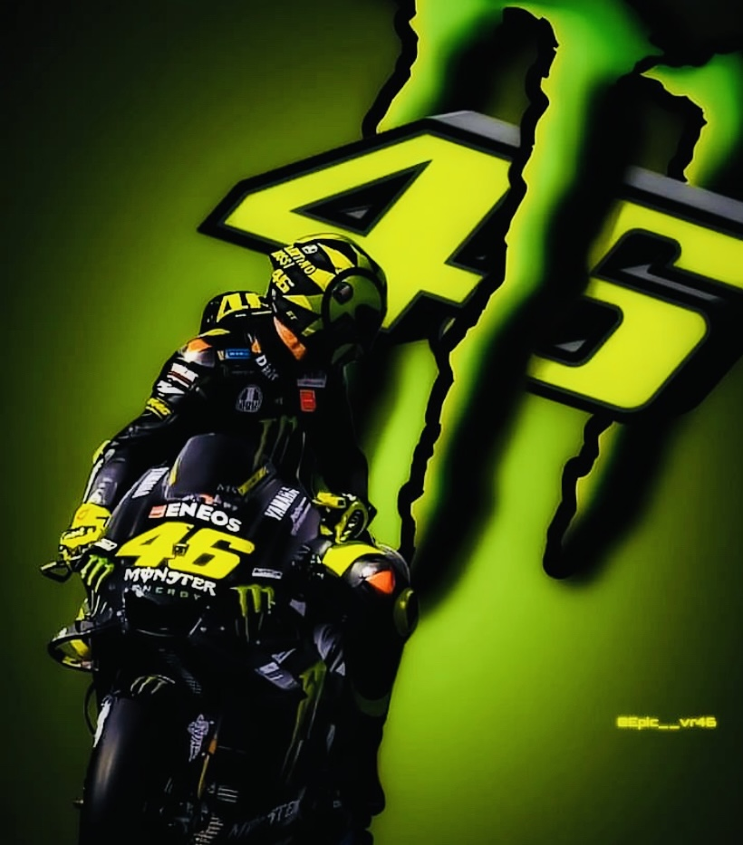
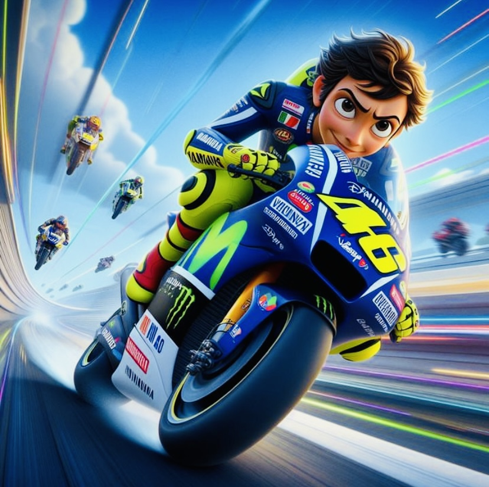

BIOGRAPHY
Valentino Rossi; born 16 February 1979) is an Italian racing driver, former professional motorcycle
road racer and nine-time Grand Prix motorcycle racing World Champion. Nicknamed The Doctor, he is widely considered to be the greatest-ever motorcycle
racer.Of Rossi's nine Grand Prix World Championships, seven were in the premier 500cc/MotoGP class. He holds the record for most premier class
victories, with 89 to his name. He won premier class World Championships with both Honda and Yamaha. He is also the only road racer to have competed in 400 or more Grands Prix.
He rode with the number 46 for his entire career.
After graduating to the premier class in 2000, Rossi won the final 500cc World Championship (becoming the last satellite rider to win the top-class
title to date) and the 8 Hours of Suzuka with Honda in 2001. He also won MotoGP World Championships with the factory Repsol Honda team in 2002 and 2003
and continued his run of back-to-back championships by winning the 2004 and 2005 titles after leaving Honda to join Yamaha. He lost the 2006 title
with a crash in the final round at Valencia. In 2007, he ultimately finished third overall, before regaining the title in 2008 and retaining it in 2009.
After a 2010 season marred by a broken leg and no title defence, he left Yamaha to join the Ducati factory team, replacing Casey Stoner for the 2011and 2012 seasons,
and endured two winless seasons with the Italian marque.
125cc WORLD CHAMPIOMSHIP
The 1996 championship season marked the debut of Rossi, then 17, in Grand Prix motorcycle racing. He had some success in his first year, scoring consistent
points and sometimes finishing just off the podium in his races from Malaysia to Italy, but he retired in both the French and Dutch rounds.
He scored more points by finishing fifth in Germany, but suffered another retirement in the British round.
At the 1996 Austrian Grand Prix, Rossi achieved his first ever podium by finishing in third place after battling with Jorge Martínez.In the following race,
the 1996 Czech Republic Grand Prix, he achieved both his first ever pole position, on the Saturday, and his first ever race victory in the 125cc class on the Sunday.
He rode an AGV Aprilia RS125R and won after another tussle with Jorge Martínez.[22]
Rossi scored more points at Imola, but had to retire from both the Catalan and Rio rounds.
250cc World Championship
After winning the 125cc title in 1997, Rossi moved up to the 250cc class the following year.
In the 1998 season, the Aprilia RS250 was reaching its pinnacle and had a
team of riders in Rossi, Loris Capirossi and Tetsuya Harada. Rossi had to retire from the first two races in Japan and Malaysia. He came back from this by scoring three consecutive second places in Spain, Italy, and France, but retired once more from the Madrid round.
He scored his first victory at the 1998 Dutch TT, when he was more than 19 seconds
ahead of second-placed Jürgen Fuchs. He had to retire from the British Grand Prix
but bounced back by achieving a podium place in Germany, finishing third.
In the Czech Republic, he crashed out of the race, but then enjoyed a flurry of
victories from Imola to Argentina. He finished the season, his rookie year in the class, as the
championship runner-up with 201 points, just 23 behind champion Loris Capirossi.

MotoGP World Championship
The inaugural year for the MotoGP bikes was 2002, when riders experienced teething problems getting used to the new bikes. Rossi started the year off strong
and won the first race in wet conditions in Japan, beating several local riders who were
racing as wildcards.[58] He also took the pole position in the first five races.
Rossi finished second in South Africa, where his teammate Tohru Ukawa took his first and only victory in the MotoGP class. He then scored victories from the
Spanish to the German rounds, including two pole positions in the Dutch and British GPs.
His only retirement of the season was from the Czech Republic round. He then had back-to-back wins in
Portugal and Rio, two second-place finishes in the Pacific and Malaysia, another victory in Australia and a second-place finish in the final race in the Valencian Community.[6